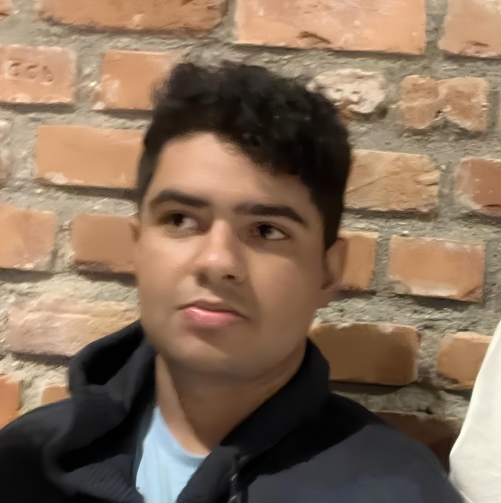

Sobre Mim
Olá! Meu nome é Anderson Tavares, sou um estudante de Engenharia de Software apaixonado por tecnologia, inovação e desenvolvimento. Tenho experiência com HTML, CSS, JavaScript, Java, Python e estou sempre buscando aprender novas ferramentas e tendências do mercado.
Atualmente estudo Engenharia de Software e desenvolvo projetos pessoais para aprimorar minhas habilidades. Gosto de criar interfaces modernas, acessíveis e funcionais, sempre focando na experiência do usuário.
- Principais habilidades: HTML5, CSS3, JavaScript, Java, Python, Git, Figma
- Idiomas: Português (nativo), Inglês (intermediário)
- Soft Skills: Comunicação, trabalho em equipe, criatividade, resolução de problemas
Fora do mundo do código, meus hobbies incluem videogames, tocar violão e ler livros de ficção científica. Acredito que a criatividade e a lógica que aplico em meus hobbies também se refletem na forma como abordo desafios no desenvolvimento.
“Tecnologia é sobre pessoas. Meu objetivo é criar soluções que facilitem a vida e inspirem outros a aprender.”